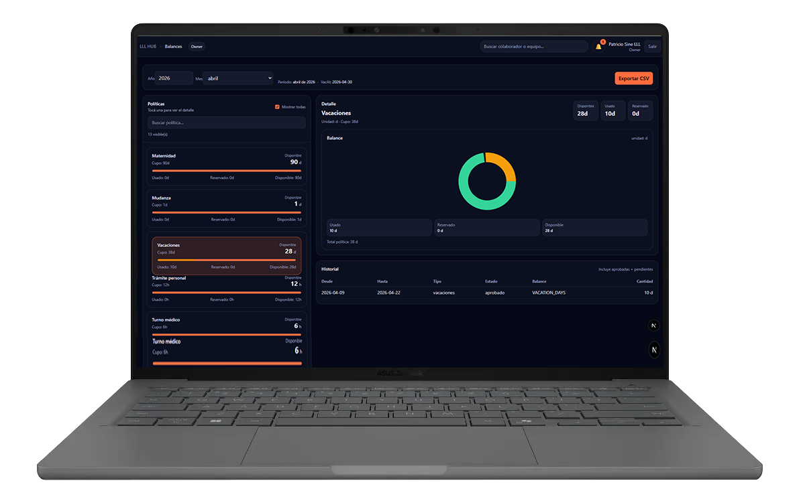
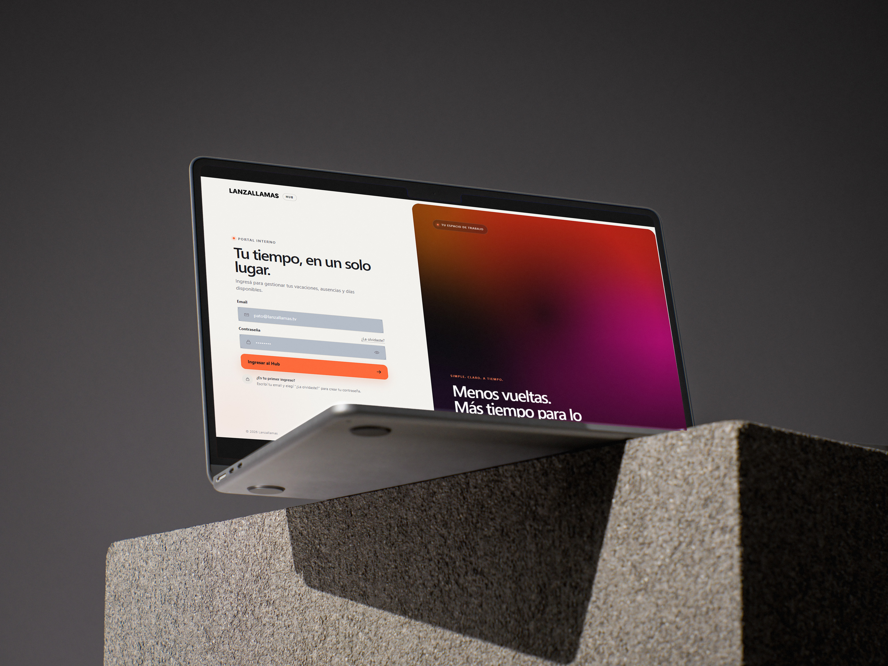
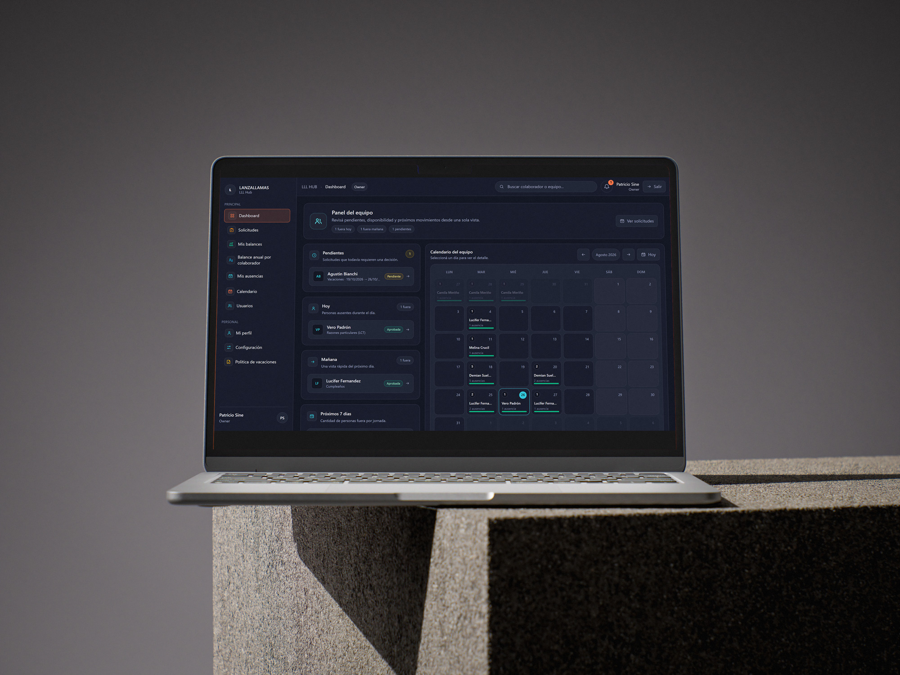
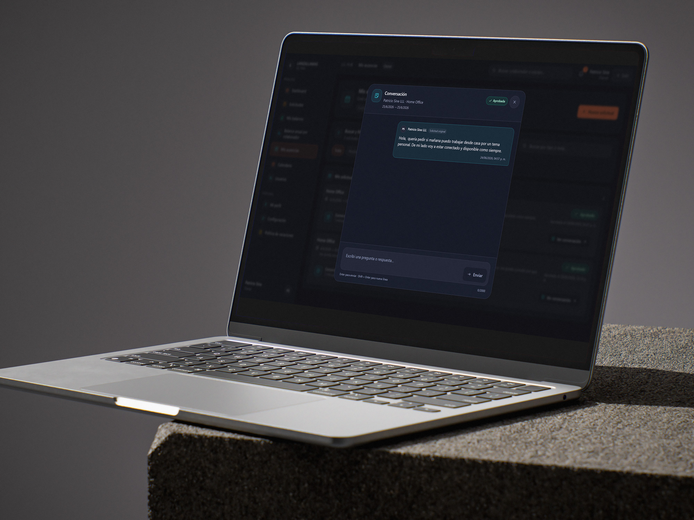
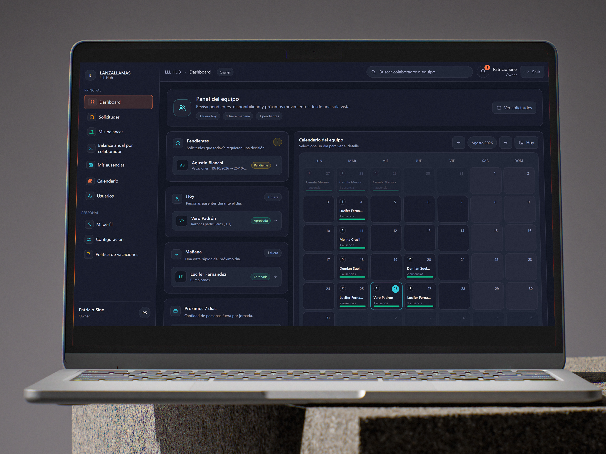

Centralize
Unificar solicitudes y conversaciones sin perder el contexto necesario para decidir.
01 Product case study / 2026

LLL Hub / Product walkthroughDrag the screen to explore
Overview
Lanzallamas needed a clearer way to coordinate vacations, home office and other absences without relying on messages, spreadsheets and scattered records.
LLL Hub brings requests, balances, calendars and people data into one shared workspace, with focused views for employees and owners.
Product screens
Scroll, arrastrá o usá las flechas para recorrer las pantallas.




The challenge
Unificar solicitudes y conversaciones sin perder el contexto necesario para decidir.
Traducir reglas, días acumulados y estados en información fácil de leer.
Servir a colaboradores y owners sin fragmentar la experiencia del producto.
Development stack
Una arquitectura enfocada en velocidad, consistencia y una experiencia fluida en cada pantalla.
App architecture & routing
Typed product logic
Scalable design system
Data, auth & realtime
Motion & interaction
Responsive visual details
Available for selected projects
¿Tenés un producto que necesita sentirse así de claro? Contame dónde se traba y hagamos que toda la experiencia funcione.